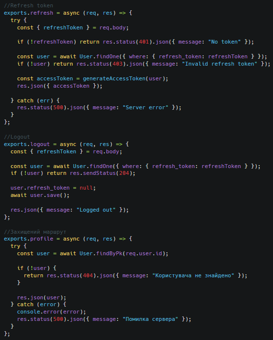
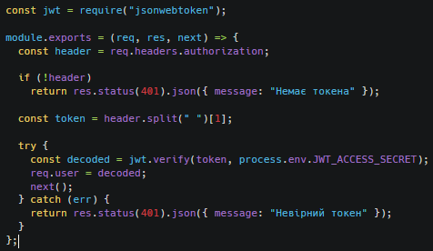
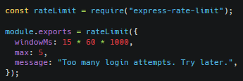
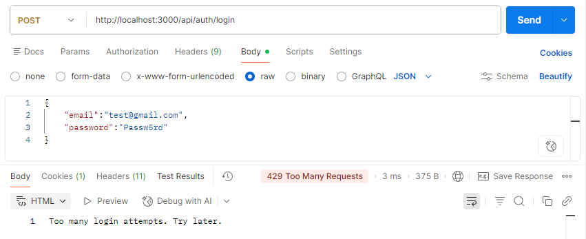
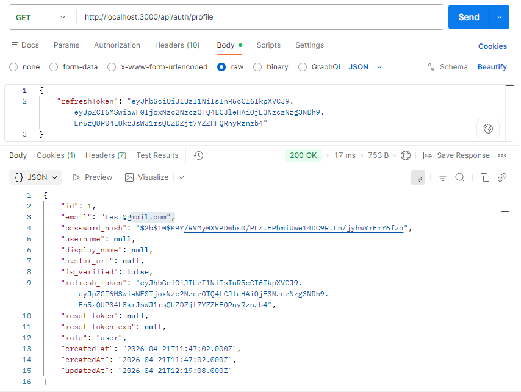
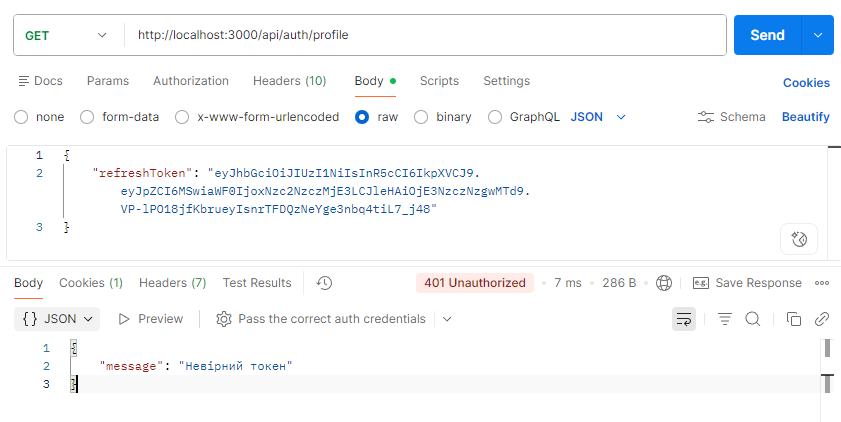
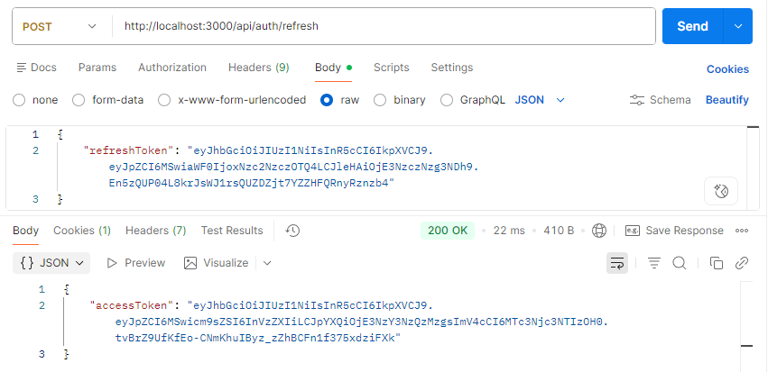
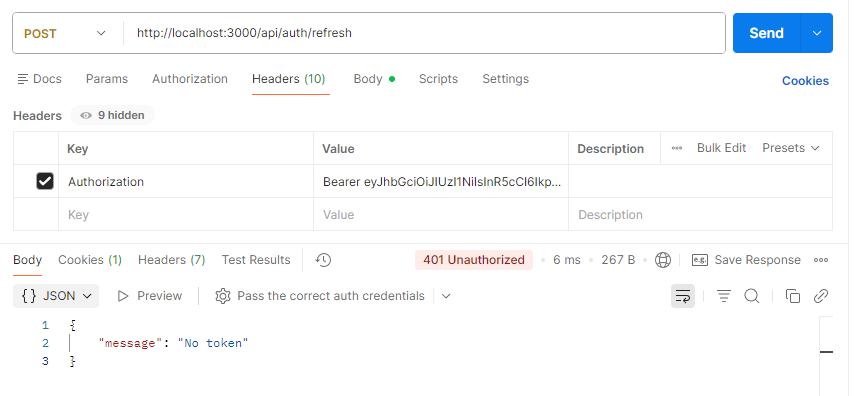
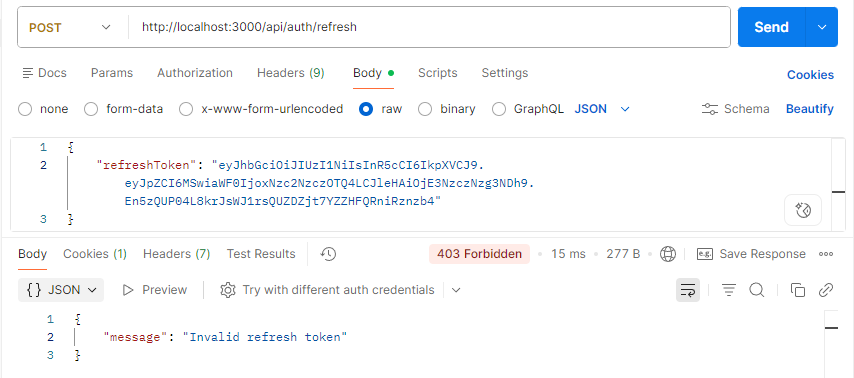
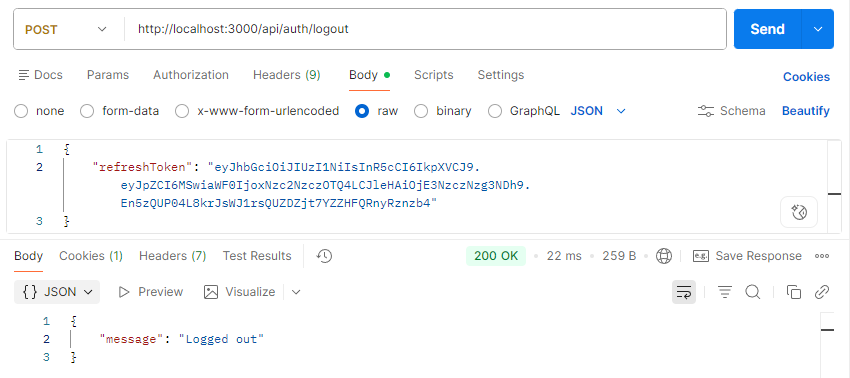

Додаємо Захищений маршрут + logout + refresh token у контролер(з валідацією даних та обробкою помилок) та реалізацію обмеження кількості спроб входу
controllers/auth.controller.js
Зображення

middleware/auth.middleware.js
Зображення

Протестуємо API через Postman та проведемо аналіз отриманих результатів
Захищений маршрут + (валідація даних, обробка помилок) та реалізацію обмеження кількості спроб входу
middleware/rateLimit.js
Зображення

Зображення

Захищений маршрут + (валідація даних, обробка помилок)
Зображення



logout + refresh token + (валідація даних, обробка помилок)
Зображення



Logout
Зображення
